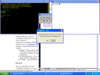
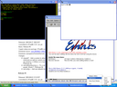
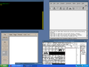

Last updated: 2004-04-07 0200 EDT (Harold L Hunt II)
|
 (65 KiB) 2003-12-24 Multi-Window Mode and Exit Confirmation. |
 (69 KiB) 2003-12-24 Multi-Window Mode and Tray Menu. |

(66 KiB) 2003-12-24 Rootless, openbox wm, gv, xfig, and ddd running locally. |
|
Install Cygwin/X now |
Cygwin/X is a port of the X Window System to the Microsoft Windows family of operating systems. Cygwin/X runs on all recent consumer and business versions of Windows; as of 2003-12-27 those versions are specifically Windows 95, Windows 98, Windows Me, Windows NT 4.0, Windows 2000, Windows XP, and Windows Server 2003.
Cygwin/X consists of an X Server, X libraries, and nearly all of the standard X clients, such as xterm, xhost, xdpyinfo, xclock, and xeyes. Cygwin/X, as the name implies, uses the Cygwin project which provides a UNIX-like API to Xlib and X clients, thereby minimizing the amount of porting required.
Cygwin/X is licensed under an X style license; Cygwin is licensed under a modified GNU General Public License that specifically allows libcygwin1.a to be linked to programs that are licensed under an Open Source compliant license without such linking requiring that those Open Source programs be licensed under the GNU General Public License (see the Cygwin licensing page for more information). Source code and binaries for both projects are freely available.
|
Install Cygwin/X now |
Cygwin/X is installed via Cygwin's setup.exe and the installation process is documented in the Cygwin/X User's Guide. Whether or not you already have Cygwin installed, you can add Cygwin/X to your installation by downloading the latest setup.exe, running setup, and selecting the 'xorg-x11-base' package from the 'X11' category.
Using Cygwin/X is documented in a step-by-step manner, with lots of pictures and examples, in the Cygwin/X User's Guide. Please notice, however, that Cygwin/X contains many general-purpose programs, libraries, and functions that are part of all X distributions. It is therefore beyond the scope of the Cygwin/X User's Guide to document all of these X Window System components. To find documentation, for example, for setxkbmap one should consult the generic X documentation such as the SETXKBMAP(1) manual page. You could always, of course, do a Google search for setxkbmap, which finds the manual page mentioned above.
Please send Cygwin/X related questions, observations, news, announcements, and technical problems (bad html, broken links) concerning these web pages to the cygwin-xfree mailing list.
{kind=link}
{kind=link}
{kind=link}